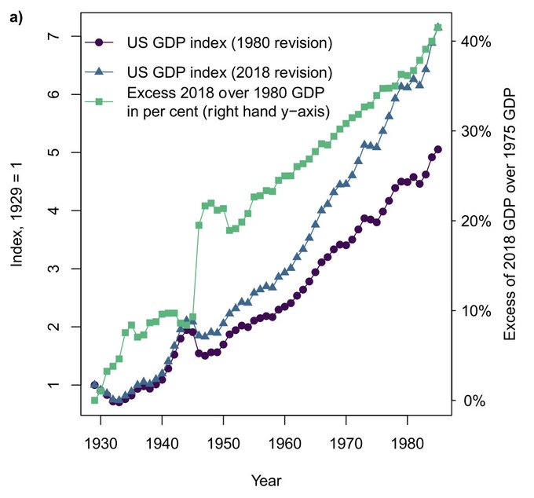

15 Green Growth
15.1 Decoupling
Decoupling: the end of the correlation between increased economic production and decreased environmental quality.
The needed decoupling does not occur! Not GLOBAL, not FAST-ENOUGH, not LONG-ENOUGH
Vaden (abstract)
The idea of decoupling “environmental bads” from “economic goods” has been proposed as a path towards sustainability by organizations such as the OECD and UN. Scientific consensus reports on environmental impacts (e.g., greenhouse gas emissions) and resource use give an indication of the kind of decoupling needed for ecological sustainability: global, absolute, fast-enough and long-enough. This goal gives grounds for a cate- gorisation of the different kinds of decoupling, with regard to their relevance. We conducted a survey of recent (1990–2019) research on decoupling on Web of Science and reviewed the results in the research according to the categorisation. The reviewed 179 articles contain evidence of absolute impact decoupling, especially between CO2 (and SOX) emissions and evidence on geographically limited (national level) cases of absolute decoupling of land and blue water use from GDP, but not of economy-wide resource decoupling, neither on national nor international scales. Evidence of the needed absolute global fast-enough decoupling is missing.
15.2 Rebound (Jevons Paradox)
Lange
Literature on the rebound phenomenon has grown significantly over the last decade. However, the field is characterized by diverse and ambiguous definitions and by substantial discrepancies in empirical estimates and policy proposals. As a result, cumulative knowledge production is difficult. To address these issues, this article develops a novel typology. Based on a critical review of existing classifications, the typology introduces an important differentiation between the rebound mechanisms, which generate changes in energy consumption, and the rebound effects, which describe the size of such changes. Both rebound mechanisms and rebound effects can be analytically related to four economic levels – micro, meso, macro and global – and two time frames – short run and long run. The typology is populated with eighteen rebound mechanisms from the literature. This contribution is the first that transparently describes its criteria and methodology for developing a rebound typology and that gives clear definitions of all terms involved. The resulting rebound typology aims to establish common con ceptual ground for future research on the rebound phenomenon and for developing rebound mitigation policies.
15.3 Artefact?
Fix
I investigate the hypothesis that the evidence for decoupling is a methodological artifact that arises from the use of monetary value to measure output. As demonstrated below, when the price of energy is used to deflate nominal GDP (rather than the GDP deflator), evidence for decoupling al- most entirely disappears. I hypothesize that monetary value, rather than represent the quantity of output, functions as a feedback device for controlling the flow of resources. Further investigation suggests that this feedback is not random; rather, it is fundamentally related to the biophysical labor productivity of the mining sector.
I should be clear that my argument is not that statistical agencies have somehow made a ‘mistake’ in their calculation of output. To the contrary, I hypothesize that the notion of ‘output’ (and therefore, ‘decoupling’) is a conceptual artifact that re- sults from the misapplication of linear thinking to a non-linear system.
If we think in biophysical terms, the economy is a complex, non-equilibrium system that uses biophysical flows to sustain itself. The only linear output of such a system is its waste.
The economy has no output; rather, it has a resource throughput.
Our mistake comes when we label certain internal pro- cesses as ‘output’: this gives the illusion of linearity where none actually exists. All of the outputs of the myriad of internal processes within the economy are destined to become inputs to other processes. Thus the internal workings of the economy are inherently circular, meaning the notion of a linear output is difficult to justify.
The notion of ‘output’ (at the level of the entire economy) is a con- ceptual artifact that arises from the focus on monetary value. That is, we conflate a sale (a monetized exchange) with the creation of an output. By aggregating sales (and calling this output), we create the illusion that the economy is a linear process.
If we drop the assumption that a sale represents an output, the illusion of linearity disappears: all internal processes become circular and the very notion of output (and hence, decoupling) becomes untenable. At the level of the entire econ- omy, the only linear flow is the stream of biophysical throughput, which ends in the output of waste.
Rather than treat monetary value as an output, I offer the alternative hypothesis that monetary value functions as a feedback device for controlling the flow of bio- physical throughput. We can frame this paradigm shift by asking the following question: how does the economy ‘know’ to consume more resources? In the animal kingdom, the stimulus to consume resources comes from sensory feed- back: animals ‘know’ to consume resources because they ‘feel’ hungry. What is the corollary of this sensory feedback in the economic system? My hypothesis is that monetary value functions as such a feedback mechanism, stimulating or stifling the flow of resources.
Prices constitute a feedback system that regulates the flow of resources through the economy.
By thinking in this way, however, we place a heavy emphasis on the price of energy (the price of electricity in this case). Thus, we must ask – where does the price of energy come from? It is rather disconcerting to think that random market fluctuations might cause a change in the price of energy that somehow leads to a change in the entire economy’s ability to consume useful work. This would lead us straight back to the neoclassical view that the market is the ultimate arbiter of the economy. The task of biophysical economics should be to show that energy prices are, in fact, not random at all. Instead, they are a reflection of a broader biophysical reality.
The nominal price of fossil fuel is a simple function of two variables: nominal GDP and the biophysical productivity of the mining sector.
The evidence for decoupling almost completely disappears when nominal GDP is deflated by the price of electricity, rather than by the GDP deflator. This implies that evidence for decoupling is a methodological artifact – a result of the decision to measure output in terms of monetary value. The evidence presented here supports the alternative hypothesis that monetary value functions as a feedback device for controlling biophysical throughput.
When moving from neoclassical theory to the real world, our ability to measure decoupling is undermined by serious (and I would argue, insurmountable) epistemological difficulties. The conventional measure of decoupling – the energy intensity of GDP – fails all three conditions for an effective efficiency metric. Thus, any evidence for decoupling that is provided by this metric should be met with appropriate scepticism. As such, I argue that the neoclassical notion of decoupling is untestable.
15.4 The Green Growth Delusion
Ketcham
“Green Growth” is the idea that the organizing principle of our civilization — endless growth of economies and populations — can be decarbonized swiftly in a way that will involve no material disruption.
In the annals of industrial civilization, the Green New Deal counts as one of the more ambitious projects. Its scale is vast, promising to reform every aspect of how we power our machines, light our homes and fuel our cars. At this late hour of ecological and climate crisis, the Green New Deal is also an act of desperation.
The consensus on the need for scaling up renewable energy is rarely disturbed by a disquieting possibility: What if techno-industrial society as currently conceived — based on ever-increasing GDP, global trade and travel, and complex global production and distribution chains designed to satisfy the rich world’s unquenchable appetite for bigger, faster, more of everything — what if that simply cannot function without energy-dense fossil fuels?
15.5 Measurement Issues
Semieniuk Abstract
Efforts to assess the possibilities for decoupling economic growth from resource use and negative environmental impacts have examined their historical relationship, with varying and inconclusive results. This paper shows that ambiguities in the historical measurement arising from definitional changes to GDP are sufficiently large to affect the results. I review the history of structural revisions to GDP using the example of the United States, and on international comparisons of purchasing power parity, and compare decoupling results using GDP vintages reported between 1994 and 2021 for most countries. Between vintages, 10–15% of countries switch between relative decoupling and recoupling from energy or materials on decadal intervals, and up to as many countries as decouple absolutely in an older vintage stop or newly start absolutely decoupling in the newer vintage. GDP vintages also affect environmental Kuznets curve results on absolute decoupling in Grossman and Krueger’s seminal paper and accelerate the International Energy Agency’s annual global decline in energy intensity by up to −0.2 percentage points. Inconsistencies in economic measurement introduce ambiguity into historical decoupling evidence and model projections into the future. To advance debate, rigorous reporting and sharing of data vintage for subsequent comparison and replication are urgently needed.

Semieniuk Discussion
Evidence for relative and absolute decoupling varies in an economically important way with GDP revisions over time. It follows that the entrenched debate about whether environmental Kuznets curves exist or not, and the extent to which a growing economy can limit its environmental impact, is marred by an ambiguity that hasn’t previously been acknowledged. Evidence from different sources can only be directly compared if both sources use the same GDP definition. If …
Semieniuk Conclusion
This paper has traced structural revisions in how GDP is accounted for and shown that these revisions impact measures of decoupling in both quantitatively and qualitatively important ways. Between vintages, 10–15% of countries switch between relative decoupling and recoupling from energy or materials on decadal intervals, and up to as many countries as decouple absolutely in an older vintage stop or newly start absolutely decoupling in the newer vintage. Some of the largest swings in decoupling …
Semieniuk (2023) Inconsistent definitions of GDP: Implications for estimates of decoupling (paywall)
15.6 Cross-border Transition Risks
Espargne
Structural differences between countries in relation to the degree of fossil dependence, the penetration of renewables and their underlying supply-chains may have important cross-border macroeconomic implications. Changing patterns of trade in energy commodities (fuel, technologies, materials) may have substantial impacts, negative or positive, on the balance of payments of both exporting and importing countries, as well as on international financial flows. At the country level these changes can be large, even if opposite effects nearly cancel out at the global level.
During the “mid-transition” period, when the economic transformation is most rapid, cross-border risks could generate or exacerbate instability in the economic, political, and financial spheres, which may become detrimental to the global transition process itself.
We then define the “mid- transition” period as the time span during which low-carbon and fossil-based energy and industrial socio- technical regimes are both undergoing rapid transformation, co-exist on a large scale, and operate in a highly contested space, which causes new or exacerbates existing instabilities and volatility of global energy markets, with knock-on effects on the global economy.
The existing literature on the macroeconomic effects of climate mitigation policies often simplifies nation-level challenges and policy contexts with the goal of seeking simple narratives that apply at the global level Developed as general basis scenarios of globally coordinated decision-making and cost-effective economic evolution, this literature sheds little light on the links between the transition and the structural transformation of the global economy.
Global decarbonization will very likely change the structure of international trade and capital flows. Among the world’s largest economies, China, India and Japan are likely to benefit the most from the transition, while Russia, Saudi Arabia the U.S. could be negatively affected
To empirically simulate the potential impacts of a decarbonization of the world economy on trade, we employ E3ME-FTT, a global macro-econometric model that integrates a range of social and environmental processes.
E3ME is a widely used global macroeconometric model disaggregated over 70 regions and 43 industrial sectors. Its core is a demand-led input-output and econometric-driven accounting system. The demand for final goods and services is first estimated based on domestic and import prices and disposable household income. This drives the demand for intermediate products and investment goods (production capital) through the input-output framework and through investment equations. Disposable income is determined econometrically from employment and wages, while investment is determined based on the needs of industry to expand and the prices of capital goods. The allocation of finance is demand-driven, which implies that loans are created based on the creditworthiness of projects, where new investment ventures do not necessarily crowd out other investment elsewhere in the economy.
The inconsistency between committed emissions from invested capital and carbon budgets suggests that an increasing share of the global fossil infrastructure is at risk of premature decommissioning.
Second-round effects can occur through a liquidity channel if assets becoming stranded have previously been used as collateral for cross-border loans.
Asset managers could be exposed to large transition-induced financial losses given that, since the GFC, their profitability has increasingly relied on “real(-economy) assets” exposed to transition risks in a scenario of global decarbonization, including energy, transportation and water supply infrastructure, farmland, and housing. Similarly, the decarbonization strategies of states that are “global owners” through their state-owned enterprises (SOEs) and/or sovereign wealth funds (SWFs) (e.g., China, Norway, Qatar, Russia, UAE) could have cross-border financial impacts, notably through changes in SWFs’ “carbon portfolios”. Uncoordinated and/or sudden divestment decisions could in turn generate second-round effects such as widespread carbon asset selloffs.
A deterioration of the international investment position of fossil exporting countries could affect flows of petrodollars into international financial centers, notably the U.S.
Without the substantial foreign inflows into U.S. government bonds, the 10-year Treasury yield could be 80 basis points higher.
There are cross-border links between sovereign debt crises, extractivism, and transition risks.
By acting as a price-insensitive buyer and supporting companies with low creditworthiness, major central banks change the structure of market prices, notably the debt of fossil companies.
By bailing out companies that may not be creditworthy, major central banks send a signal to foreign investors and asset managers whereby high-carbon activities are a good bet, because profits are privatized while losses are socialized.
In the short term the social losses of not bailing out unsustainable firms are greater than those associated with a bailout. Under those expectations, firms may engage in excessively correlated behavior, and excessive investment in fossil fuels.
We estimate that the implied temperature rise (ITR) of purchases made under the Fed’s Secondary Market Asset Purchase Program (SMCCF, specifically its exchange-traded fund portfolio) and the ECB’s Corporate Sector Purchase Program (CSPP) during the COVID- 19 crisis stood at 3.1°C and 2.3°C, respectively.
Espargne (2023) Cross-Border Risks of a Global Economy in Mid-Transition (pdf)